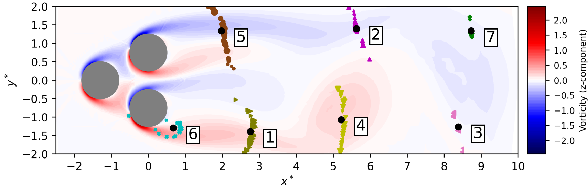
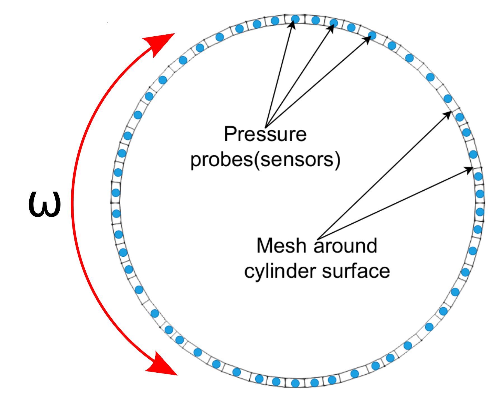

Deep Reinforcement Learning for closed-loop flow control
(in simulations)
Andre Weiner
TU Braunschweig, Institute of Fluid
Mechanics
Outline
- Why deep reinforcement learning (DRL)?
- Reinforcement learning basics
- Proximal policy optimization (PPO)
- DRL with OpenFOAM and PyTorch
Why DRL for closed-loop flow control?
The two ingredients:
- Reinforcement learning: solution of control-problems by trial and error (sampling)
- Deep learning: efficient approximation of high-dimensional functions based on samples
$\rightarrow$ DRL: sample-efficient RL for high-dimensional control problems
Why simulations?
A priori design optimization (sensor placement, actuation strategies); image by Tom Krogmann.
Reinforcement learning basics
Reinforcement learning

Create an intelligent agent that learns to map states to actions such that cumulative rewards are maximized.
Experience tuple:
$$ \left\{ S_t, A_t, R_{t+1}, S_{t+1}\right\} $$
Trajectory:
$ \left\{S_0, A_0, R_1, S_1\right\} $
$ \left\{S_1, A_1, R_2, S_3\right\} $
$\left\{ ...\right\} $
Long-term consequences:
$$ G_t = \sum\limits_{l=0}^{N_t-t} \gamma^l R_{t+l} $$
- $t$ - control time step
- $G_t$ - discounted return
- $\gamma$ - discount factor, typically $\gamma=0.99$
- $N_t$ - number of control steps
Dealing with uncertainty:
$$ v_\pi (s) = \mathbb{E}_\pi \left[ G_t | S_t=s \right] $$
- $v_\pi (s)$ - value function
- $\pi$ - policy (control flow)
Proximal policy optimization
Why PPO?
- continuous and discrete actions spaces
- relatively simple implementation
- restricted (robust) policy updates
- sample efficient
- ...
Refer to R. Paris et al. 2021 and the references therein for similar works employing PPO.

Proximal policy optimization (PPO) workflow (GAE - generalized advantage estimate).

Policy network predicts probability density function(s) for action(s).

Comparison of Gauss and Beta distribution.
Learning what to expect in a given state:
$$ L_V = \frac{1}{N_\tau N_t} \sum\limits_{\tau = 1}^{N_\tau}\sum\limits_{t = 1}^{N_t} \left( V(s_t^\tau) - G_t^\tau \right)^2 $$
- $\tau$ - trajectory (single simulation)
- $s_t$ - state/observation (pressure)
- $V$ - parametrized value function
- clipping not included
Was the selected action a good one?
$$\delta_t = R_t + \gamma V(s_{t+1}) - V(s_t) $$ $$ A_t^{GAE} = \sum\limits_{l=0}^{N_t-t} (\gamma \lambda)^l \delta_{t+l} $$
- $\delta_t$ - one-step advantage estimate
- $A_t^{GAE}$ - generalized advantage estimate
- $\lambda$ - smoothing parameter
make good actions more likely - policy objective function
$$ J_\pi = \frac{1}{N_\tau N_t} \sum\limits_{\tau = 1}^{N_\tau}\sum\limits_{t = 1}^{N_t} \left( \frac{\pi(a_t|s_t)}{\pi^{old}(a_t|s_t)} A^{GAE,\tau}_t\right) $$
- $\pi$ - current policy
- $\pi^{old}$ - old policy (previous episode)
- clipping and entropy not included
- $J_\pi$ is maximized
DRL with OpenFOAM and PyTorch
Active control of the flow past a cylinder
https://github.com/darshan315/flow_past_cylinder_by_DRL
https://github.com/FabianGabriel/Active_flow_control_past_cylinder_using_DRL
Flow past a circular cylinder at $Re=100$.
Things we might be interested in:
- reduce drag and lift forces
- mitigate extreme events
- maximize mixing in the wake
- ...
Can we reduce drag and lift forces?
rewards - expressing the goal
$$ R_t = r_0 - \left( r_1 c_D + r_2 |c_L| \right) $$
- $c_D$ - drag coefficient
- $c_L$ - lift coefficient
- $r_i$ - constants
Python/PyTorch
- create policy and value networks
- fill trajectory buffer (run simulations)
- update policy and value networks
- go back to 1. until converged
Implementation follows closely chapter 12 of Miguel Morales's Grokking Deep Reinforcement Learning
C++/OpenFOAM/PyTorch
- read policy network
- sample and apply action
- write trajectory (experience tuples)
Boundary condition defined in 0/U
cylinder
{
type agentRotatingWallVelocity;
// center of cylinder
origin (0.2 0.2 0.0);
// axis of rotation; normal to 2D domain
axis (0 0 1);
// name of the policy network; must be a torchscript file
policy "policy.pt";
// when to start controlling
startTime 0.01;
// how often to evaluate policy
interval 20;
// if true, the angular velocity is sampled from a Gaussian distribution
// if false, the mean value predicted by the policy is used
train true;
// maximum allowed angular velocity
absOmegaMax 0.05;
}

Cumulative rewards vs. episodes for various distributions.

Comparison of uncontrolled, open-loop controlled, and closed-loop controlled drag.

Angular velocity for open and closed-loop control.
How robust is the controller?
- training with steady inlet velocity
$Re=\{100, 200, 400 \}$ - test with unsteady inlet velocity
$Re(t)= 250 + 150\mathrm{sin}(\pi t)$
Variable inlet velocity/Reynolds number $Re(t) = 250 + 150\mathrm{sin}(\pi t)$

Drag coefficient for transient inlet velocity: uncontrolled and controlled.
Where to go from here?
drlFoam - DRL with OpenFOAM
Data-driven modeling SIG
- OpenFOAM wiki (overview)
- Github (resource aggregation)
- Upcoming meeting: Dec, 2022
Lecture on ML in CFD
- covers all types of ML
- freely available on Github
- work in progress